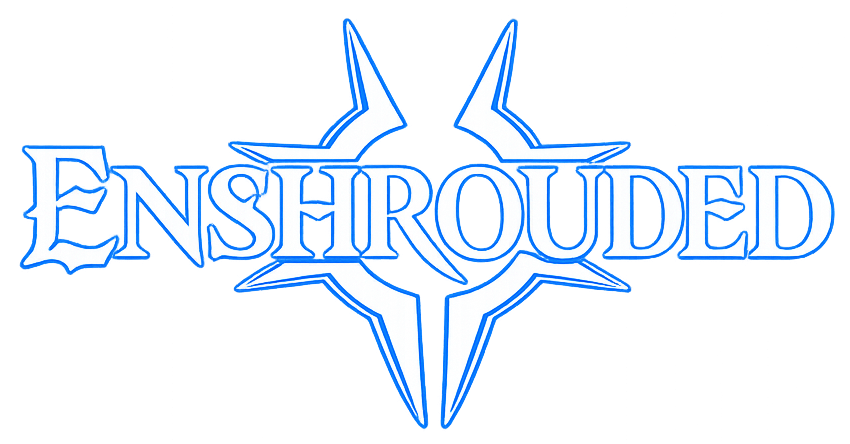

Enshrouded
Un royaume oublié, une Brume mystérieuse et une Guilde prête à tout reconstruire… même si quelques morts sont à prévoir en chemin.
📜 Informations de l'expédition
Origine :
Aventure principale 🏆
Statut :
En sommeil 💤
📅 Début : Juillet 2025
🎮 Type : Survie / Exploration / Construction
👥 Participants : MK
📖 Histoire de l'aventure
L'Embervale n'est plus que l'ombre du royaume qu'il était autrefois. Recouvert par une mystérieuse Brume, le monde regorge de ruines, de créatures hostiles et de secrets oubliés. La Guilde s'aventure dans ces terres dévastées pour survivre, reconstruire et découvrir ce qui s'est réellement passé.
🎯 Objectifs de l'expédition
- 🌫️ Survivre à la Brume
- 🗺️ Explorer les terres perdues
- 🏰 Reconstruire notre refuge
🎬 Souvenirs de l'expédition
Retrouvez les chroniques de cette aventure.